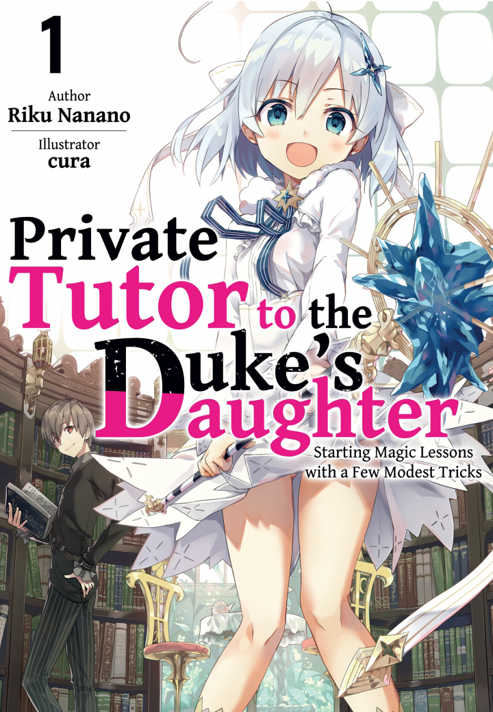

.
.
(EPUB) Private Tutor to the Duke’s Daughter.
Status:
Ongoing
Synopsis
After failing the final exam for his dream job at the royal court, promising young sorcerer Allen wants nothing more than to retreat to a simple life in the countryside. Unfortunately for him, he can't even afford the train fare!
His only solution is to get a job, but his one lead is anything but modest—Duke Howard, one of the kingdom's most powerful nobles, needs a private tutor for his daughter Tina. Despite her academic brilliance, Tina is incapable of casting even a single spell.
To make matters worse, entrance exams for the prestigious Royal Academy are fast approaching, and magical aptitude is mandatory!
Can Allen use his unique brand of spellcasting to help Tina overcome her magical impairment, a mystery that not even the kingdom's finest sorcerers have been able to solve? And does her father, the duke, even want him to?
Genre:
Adventure, Comedy, Fantasy, Harem, Romance, Seinen